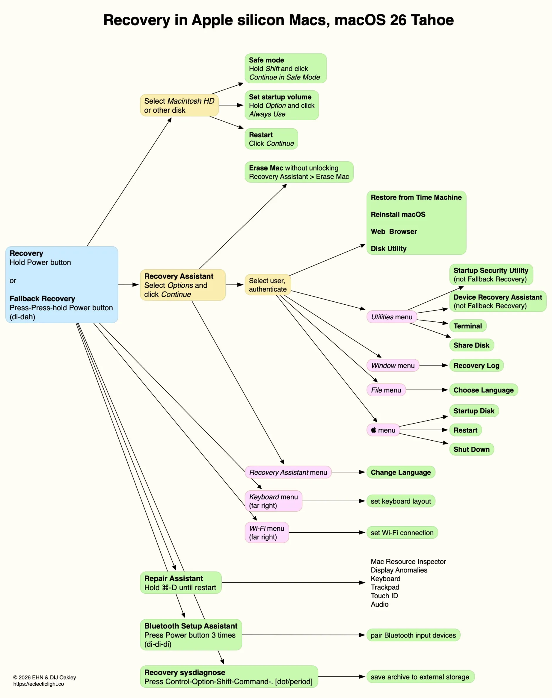
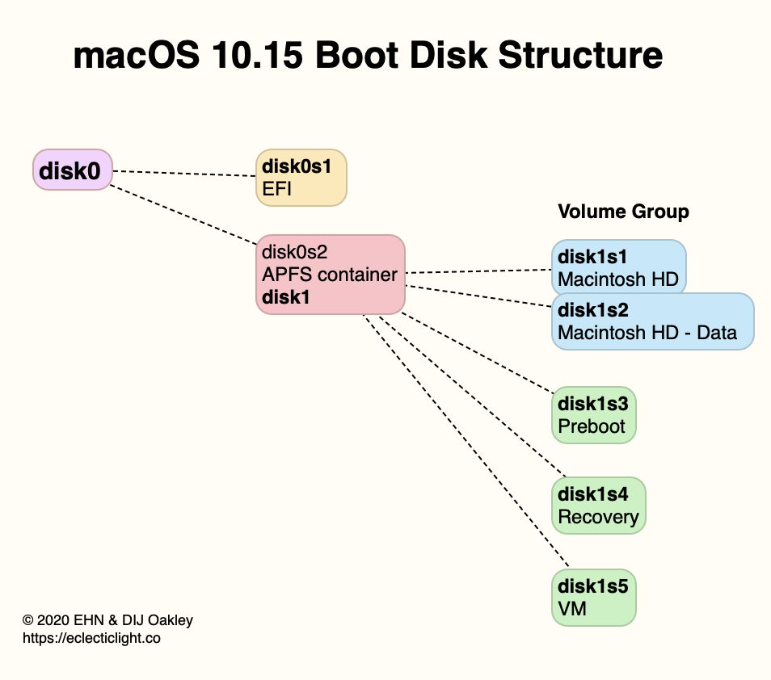
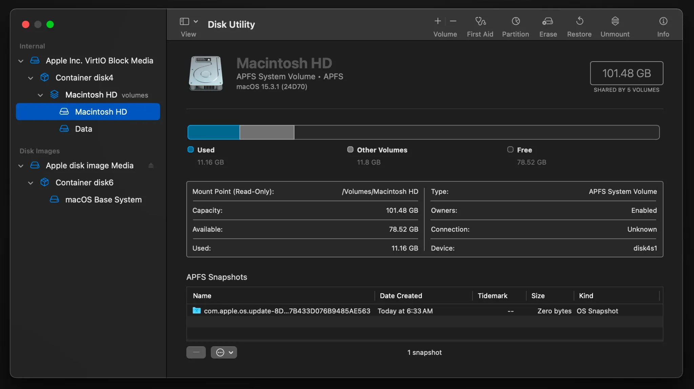
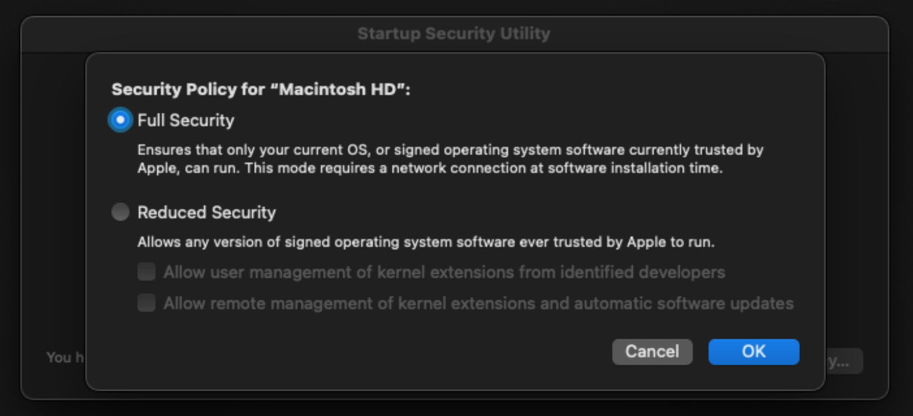

שיעור 14: סביבת שחזור ומחיקה¶
מדריך עזר לתלמיד
סקירה¶
מושגי יסוד באדריכלות שחזור (Core Recovery Concepts)¶
- Single User Mode (SUM): המנגנון ההיסטורי לשחזור מבוסס פקודות בלבד ששימש טכנאים ב-27 השנים הראשונות של ה-Mac, בטרם הוצגה מחיצת ה-Recovery ב-Lion (2011).
- 1TR - One True Recovery: במחשבי Apple Silicon, סביבת ההתאוששות (RecoveryOS) מופרדת לחלוטין ממערכת ההפעלה הרגילה (macOS) ומאוחסנת בקונטיינר ייעודי. היא תוכננה להיות "חסינה" – גם אם מחקתם את הדיסק במלואו (כולל מחיצות מערכת), ה-1TR שורד ומאפשר להוריד ולהתקין את המערכת מחדש, מבלי להזדקק ל-Internet Recovery קלאסי (כפי שהיה באינטל).
- Fallback Recovery - frOS: מנגנון "תוכנית גיבוי" ב-Apple Silicon. אם ה-1TR קורס או נפגם, המק יעלה סביבת שחזור מהעדכון הקודם של מערכת ההפעלה. מופעל על ידי לחיצה כפולה מהירה והחזקה (Double-press and hold) של כפתור ההפעלה.
- DFU Mode - Device Firmware Update: Recovery Mode חומרה ברמה הנמוכה ביותר. במצב זה ה-Mac אינו טוען כלל מערכת הפעלה ומתפקד כ"מכשיר טיפש" הממתין לקבל קושחה (Firmware) ו-recoveryOS מחדש ממחשב Mac אחר באמצעות כבל ותוכנת Apple Configurator.
- EACS - Erase All Content and Settings: כלי מובנה למחיקה מאובטחת ומיידית. במקום תהליך מחיקה פיזי ואיטי, המנגנון "זורק" את מפתחות ההצפנה (Crypto-Erase) שמגנים על ה-Data Volume. מרגע שהמפתחות הושמדו, המידע הופך למבולל והמחשב מפרמט את עצמו תוך שניות. דורש Mac עם Apple Silicon או שבב T2.
- Activation Lock: מנגנון נעילה נוגד גניבות. כאשר מופעל שירות Find My, ה-Mac נקשר ל-Apple Account של המשתמש ברמת שרתי אפל. גם אם המחשב יעבור מחיקה (Erase), אי אפשר יהיה להתקין או להפעיל אותו מחדש ללא הזנת הסיסמה של אותו Apple Account או Passcode.
- Recovery Assistant: הממשק הגרפי הראשון העולה במצב שחזור. תפקידו לאמת את זהות המשתמש: עליכם להזין סיסמת משתמש (Admin) או Recovery Key כדי "לפתוח" את ה-Volume המוצפן, לפני שתוכלו להשתמש בכלי דיסק או לשנות הגדרות ביטחון.
- Mac Sharing Mode / Target Disk Mode: מצב בו ה-Mac מוגדר ככונן חיצוני המחובר ל-Mac אחר לשם חילוץ נתונים (נקרא Target Disk Mode במחשבי Intel, ו-Mac Sharing Mode ב-Apple Silicon דרך סביבת השחזור).
פקודות Terminal במצב שחזור (Terminal Commands in Recovery)¶
במצב שחזור, ה-Terminal הוא כלי רב-עוצמה לאבחון, טיפול וביצוע פעולות שגיאות שלא ניתן לבצע מהממשק הגרפי (Disk Utility).
ניהול דיסקים ומערכת הקבצים – diskutil¶
פקודת העל לניהול מחיצות, שגיאות, ושינויי מבנה דיסק.
diskutil list: מציג את כל הכוננים הפיזיים והלוגיים במערכת, כולל מחיצות נסתרות וקונטיינרים.diskutil info /dev/diskXsY: מציג מידע מפורט על מחיצה מסוימת, כולל סוג המערכת (Format), ה-UUID שלה, והאם היא מוצפנת.diskutil verifyDisk /dev/diskX: מבצע בדיקת תקינות (Verification) לטבלת המחיצות (Partition Map) של כונן פיזי שלם.diskutil repairDisk /dev/diskX: מתקן שגיאות בטבלת המחיצות במידה ונמצאו בבדיקה (הקבילה ל-First Aid ברמת הדיסק הגבוהה).
הרחבת APFS (Apple File System)¶
ניהול Containers ו-Volumes של APFS. מחליף את מנגנוני ה-HFS+ הישנים.
diskutil apfs list: מציג פירוט מעמיק של כל Container APFS. מפרט את ה-Volumes הקיימים בתוכו, סוגם (Data, System, Preboot), מצב ההצפנה (FileVault), ואילו Snapshots קיימים.diskutil apfs deleteVolume diskXsY: מוחק Volume ספציפי מתוך ה-Container.diskutil apfs addVolume diskX APFS "NewVolume": יוצר Volume חדש בתוך Container קיים שחולק את אותו שטח דיסק באופן דינמי.diskutil apfs eraseVolume APFS "Macintosh HD" diskXsY: מוחק ויוצר מחדש Volume מסוים. שימושי לפרמוט חלקי.diskutil apfs listSnapshots /dev/diskXsY: מציג רשימה של כל ה-Snapshots השמורים על ה-Volume. שימושי למציאת גיבויים מקומיים לשחזור מהיר.
הרחבת CoreStorage (מחשבי Intel ישנים / Fusion Drive)¶
למרות שמדובר במנגנון לגאסי שהוחלף על ידי APFS, הכרחי להכיר אותו למקרה בו מטפלים במחשבי אינטל ישנים מאוד עם Fusion Drive או תצורות מורכבות של FileVault 2 ישן.
diskutil cs list: מציג את העץ המלא של מנגנון ה-CoreStorage, הכולל את ה-LVG (Logical Volume Group) ואת ה-LV (Logical Volume). פקודה חיונית למציאת ה-UUID.diskutil cs delete LVG_UUID: מוחק את קבוצת הווליומים (Logical Volume Group) כליל. פקודה זו "שוברת" את ה-Fusion Drive ומחזירה את הכוננים הפיזיים (SSD ו-HDD) לדיסקים נפרדים.diskutil cs create "GroupName" diskX diskY: מאגד מספר דיסקים פיזיים לקבוצת CoreStorage אחת (לבנייה ידנית של כונן מאוחד מחדש).diskutil cs createVolume LVG_UUID jhfs+ "Macintosh HD" 100%: השלב האחרון בבנייה הידנית – יצירת ה-Volume הלוגי בפועל מתוך שטח ה-LVG.
שחזור ואיפוס סיסמאות מתוך Recovery¶
resetpassword: פקודה פשוטה בטרמינל המזנקת את האשף הגרפי (Reset Password Assistant) לאיפוס סיסמת ה-Admin, בהנחה שיש לכם Apple Account שמקושר למחשב או Recovery Key.resetpassword -eraseMac: טריק לזמני חירום. פותחת חלון קטן המאפשר לכם "להשמיד" את המק ולעשות לו Wipe גם אם אין לכם שום הרשאה, סיסמה או גישה למשתמש Admin. שימו לב: זה ינעל את המחשב עם Activation Lock אם היה מופעל.
תקינות רשת (לחילוץ והתקנה)¶
networksetup -listallhardwareports: מראה אילו ממשקי רשת (Wi-Fi, Ethernet) קיימים ופעילים כרגע בסביבת השחזור.ping -c 4 8.8.8.8: וידוא שיש תקשורת חיצונית. 1TR זקוק לאינטרנט כדי לוודא זכאות (Activation Lock) ולהוריד את מערכת ההפעלה.
Activation Lock והיבטים ארגוניים (Enterprise & MDM Context)¶
- Activation Lock Bypass Code: במכשירים שנרשמו דרך MDM במסגרת Apple School Manager / Apple Business Manager, ניתן להסיר את ה-Activation Lock ללא המשתמש המקורי. הארגון שומר קוד עוקף (Bypass Code) במערכת ה-MDM. במידה וטכנאי נתקל במסך הנעילה, הוא משאיר את שדה שם המשתמש ריק ומקליד את הקוד העוקף בשדה הסיסמה כדי לפתוח את המחשב.
- MDM Remote Wipe - Lock & Erase: מנהל ה-IT יכול לשלוח פקודה דרך ה-MDM למחוק את המחשב מרחוק (Remote Wipe), שמפעילה את מנגנון ה-EACS. בנוסף, קיימת פקודת Remote Lock שנועלת את ה-Mac ברמת הקושחה בדרישה לקוד PIN בעל 6 ספרות. המק לא יעלה ולרוב גם לא ייכנס למצב שחזור ללא קוד זה.
- Escrow / ניהול מפתחות שחזור: במקום לבקש מהמשתמש לרשום Recovery Key (PRK) של FileVault על פתק, ה-MDM מאחסן (Escrows) את המפתח הזה באתרו. אם משתמש מאבד גישה ולתמיכת ה-IT אין אישור ב-Recovery Assistant, הטכנאי יבקש "לשחרר" את המפתח דרך קונסולת ה-MDM, יזין אותו ב-Recovery, ויקבל גישה מלאה להמשך הדיאגנוסטיקה.
קישורים מומלצים ולקריאה נוספת¶
- Use macOS Recovery on a Mac with Apple silicon - מדריך פשוט למשתמש על הכניסה והשימוש בסביבת השחזור (Recovery).
- Revive or restore a Mac with Apple silicon using Apple Configurator - מאמר טכני על איך להציל מק "מת" בעזרת כבל חיבור למק שני (DFU Mode).
- Activation Lock for Mac - הסבר קצר על מנגנון נעילת הפעלה (Activation Lock) המונע גניבות.
- Manage Activation Lock with a device management service - מדריך ארגוני איך לפתוח Activation Lock מרחוק כשהעובד עזב.
- An illustrated guide to Recovery on Apple silicon Macs - מדריך ויזואלי שחופר על תהליכי השחזור ואיך הם נראים מאחורי הקלעים.
- Erase All Content and Settings does what it says - הסבר טכני איך המק מסוגל למחוק את כל המידע עליו תוך שניות ספורות בלחיצת כפתור.
- How to recover Recovery - מאמר טכני למתקדמים על שחזור של מחיצת שחזור תקולה ב-macOS.
- A short history of Recovery in macOS - סקירה היסטורית על התפתחות סביבת השחזור מראשית הדרך.
סרטון סיכום¶




המחשה ויזואלית (עזר לתלמיד)
תמונות אלו ממחישות את הממשק או המנגנון הרלוונטי לנושא השיעור.